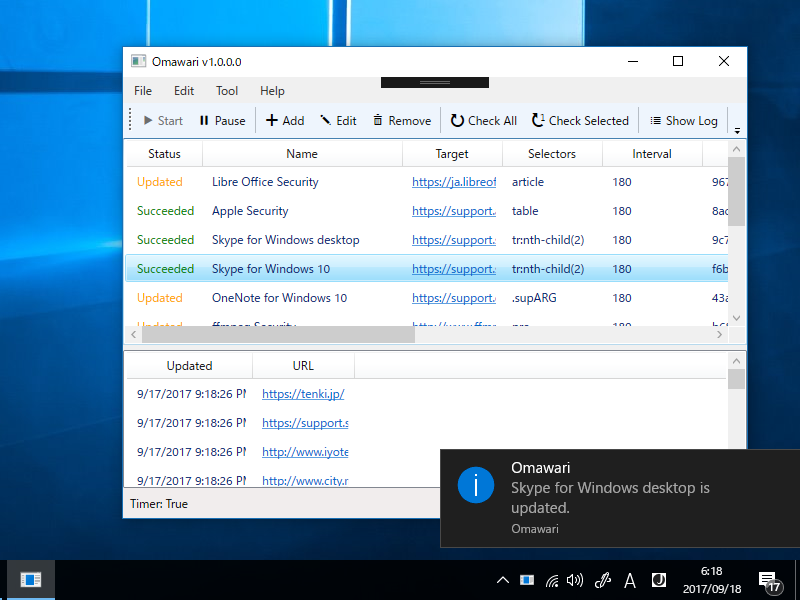
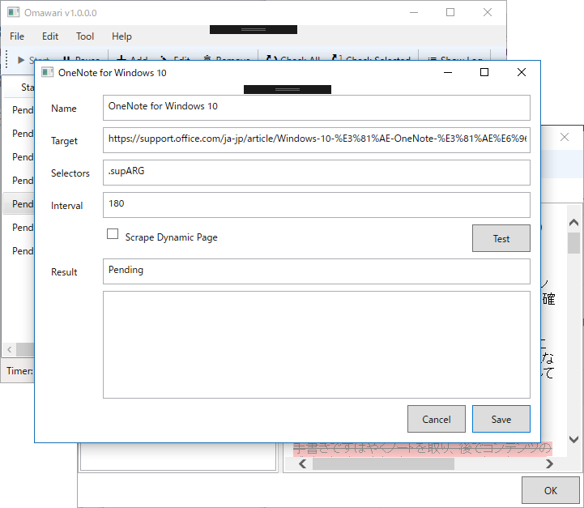
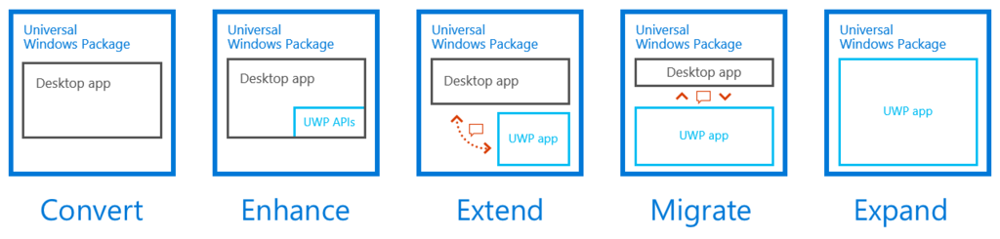

Omawari 1.1：Web 更新を巡回するヤツ。静的スクレイピングとか追加した
公開日：

だいぶサマになってきた気がする。あっちこっちにぬるぽエラーがあって、潰すのに難儀した。Swift とか羨ましいかもね？（よく知らんけど）
- デバッグビルドとリリースビルドの共存（開発の都合）
- 通知アイコンの改善
- （タイマーの通算稼働時間のカウント）
- Updated を Pending に変えるまでの時間をグローバル設定から読み込むように
- ステータス色分けの改善
- 内部で保持している UTC を Local Time にちゃんと直して表示
- コードの整理
- 静的スクレイピング機能の追加
- プレビューの文字化けを修正
- 更新ログウィンドウの追加
- スクレイピングルールのダブルクリックでログを表示（編集画面の方がよかったか？）
静的スクレイピング機能の追加

PhantomJS は遅いので、AngleSharp を使った静的スクレイピングをデフォルトにしました。下手したら3分ぐらいかかっていた処理が、たった数秒に。
AngleSharp は HtmlAgilityPack より断然使いやすいので、今後はこっちをメインに使おうと思います。
プレビューの文字化けを修正
WebBrowser.NavigateToString() を使うとたまに文字化けする問題。HTML で UTF-8 エンコードを指定すればよかったのですが、Diff の方だけやって、プレビューの方には適用されてなかった（爆死
public class WebBrowserExtension { public static readonly DependencyProperty HtmlProperty = DependencyProperty.RegisterAttached( "Html", typeof(string), typeof(WebBrowserExtension), new UIPropertyMetadata(null, HtmlPropertyChanged));public static string GetHtml(DependencyObject obj) { return (string)obj.GetValue(HtmlProperty); }
public static void SetHtml(DependencyObject obj, string value) { obj.SetValue(HtmlProperty, value); }
public static void HtmlPropertyChanged(DependencyObject o, DependencyPropertyChangedEventArgs e) { WebBrowser browser = o as WebBrowser; if (browser == null) return; string html = e.NewValue as string; if (html == null) return; html = $@" <html> <head> <meta http-equiv='Content-Type’ content='text/html;charset=UTF-8’> <style> ins.diffins {{ background-color: #cfc; text-decoration: none; }} del.diffdel {{ color: #999; background-color:#FEC8C8; }} </style> </head> <body> {html} </body> </html>"; browser.NavigateToString(html); } }
バインディング拡張の方でやるように処理を統一。
<WebBrowser u:WebBrowserExtension.Html="{Binding ViewModel.SelectedResult.Text}" />
更新ログウィンドウの追加
更新を検知したら ObservableCollection にログを追加してウィンドウに表示……っていうのをやってたのだけど、NotSupportedException が出て死んだ。異なるスレッドから書き込んだらダメみたい。
結局こっちの解決 AsyncObservableCollection を拝借した。
要するに、コンストラクターでディスパッチャーを保存しておいて、コレクション操作でエラーが出たら保存しておいたディスパッチャーにお願いする感じみたい。便利だなー（小並感
今後の予定
- Diff 周りが混乱していて、何と何を比較しているのかわかんないから UI を見直す
- よくわかんなくなってきたので、コードの整理する
- スタートアップ登録・解除機能
- 5,000円ぐらいでアイコン作ってもらおうかな？
- Desktop Bridge に挑戦するときがきた！！

Desktop Bridge を利用した WPF → UWP の移植は理想的にはこうなるらしいけど、やってるアプリ見たことないので、ちょっと挑戦してみようと思う。cmd とのやり取りは排除できないけど、それ以外の要素は UWP にできんことはない気がする。まぁ、早くても来年やね。